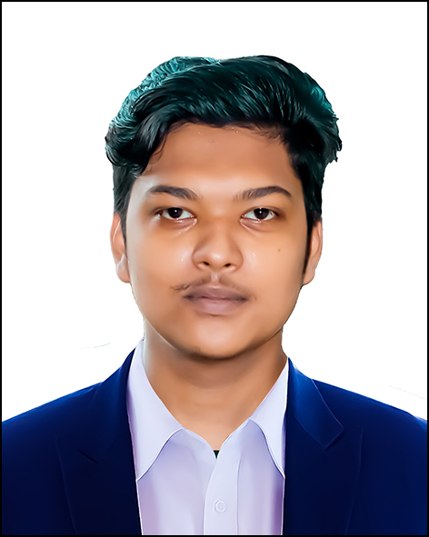

Resume

Md Emdadul Hoque
Web Developer
+8801727365830 | Niketon, Gulshan-1, Dhaka 1212 | tanvirtopsecret@gmail.com | Linkedin | Github
Career Objective
Results-Driven Full Stack Developer with 1+ Years of Experience Delivering Client Satisfaction through
Innovative Web Solutions. Eager to Contribute Expertise in a Dynamic Team Environment, Crafting Modern
And Impactful Websites. Seeking Opportunities To Apply And Enhance Skills In A Forward-Thinking
Organization
Parsonal Information
- Father's Name: Md Anamul Hoque
- Mother's Name: Ms Tahmina Hoque
- Date of Birth: 04 January, 2000
- Gender: Male
- Religion: Islam
- Nationality: Bangladeshi
- Marital Status: Unmerried
Skills
- Expertise: Html, Css, Bootstrap, JavaScript, WordPress
- Tools: VS Code, Github
Experience
Education
- Bachelor in Computer Science Engineering – University Of Scholar's [2024 – running]
- Diploma Engineering of Computer Science – Chandpur Polytechnic Institute [2019 – 2023]
- Secondary School Certificate in Science – Mashnigacha High School [2017 – 2019]
Additional Courses
- Full Stack Web Development | Shikhbe Shobai [2024 - 2025]
Languages